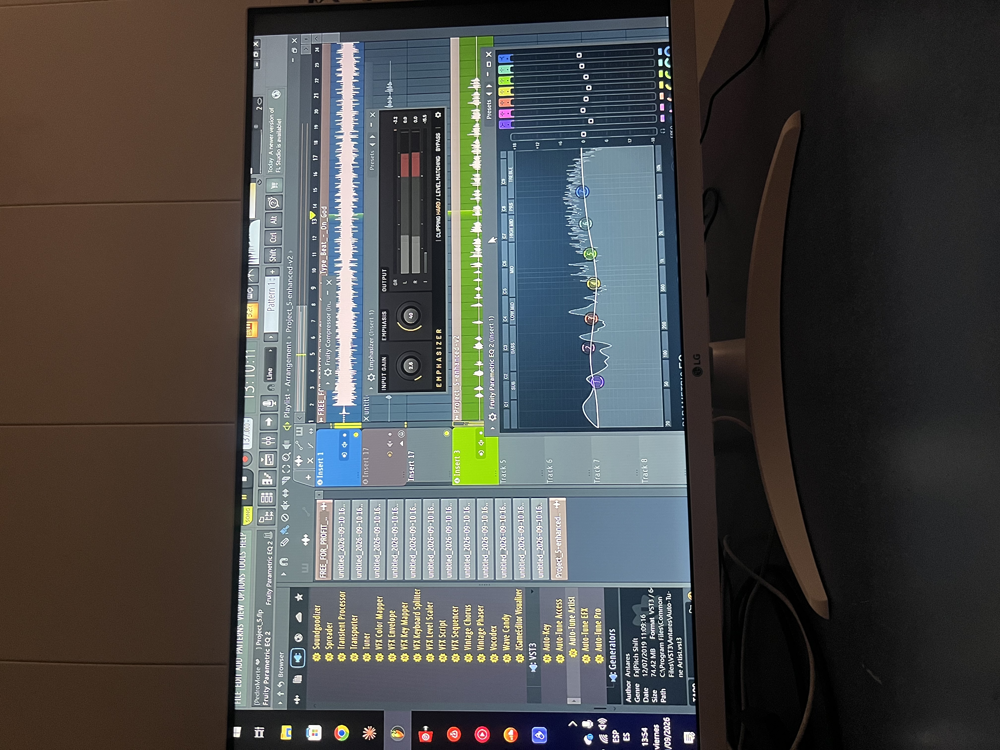
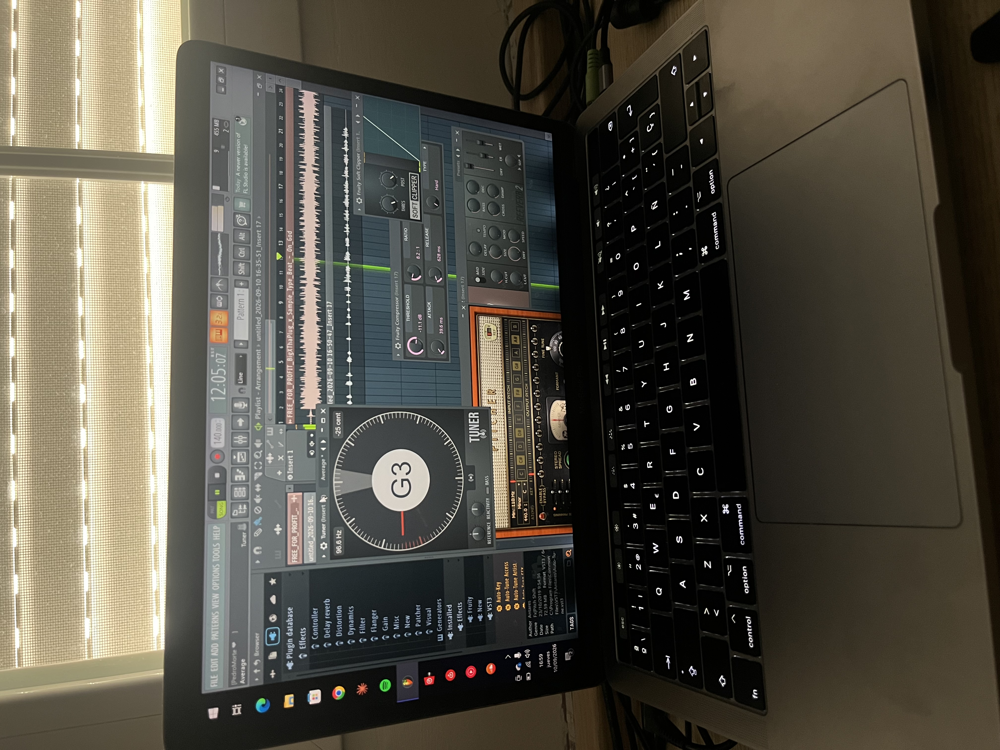
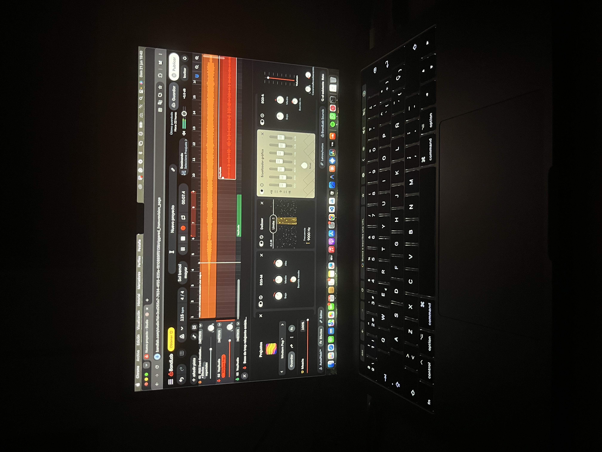
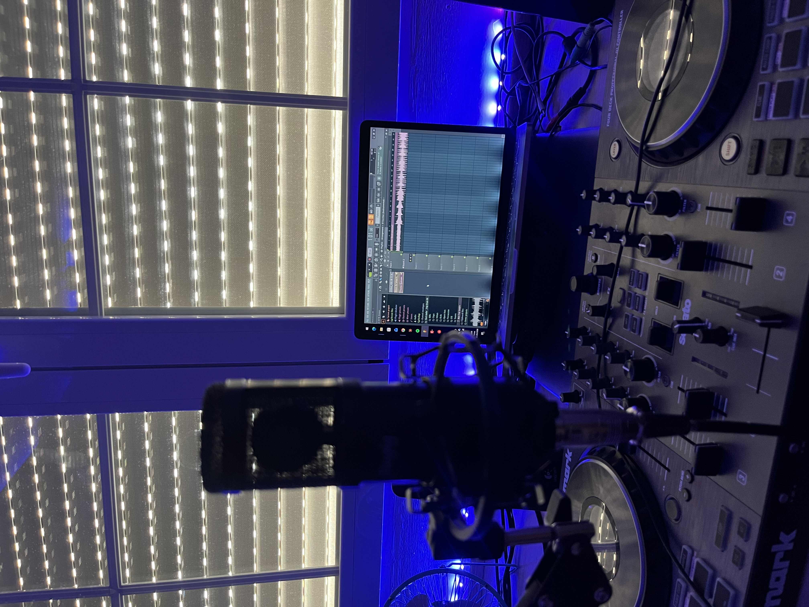
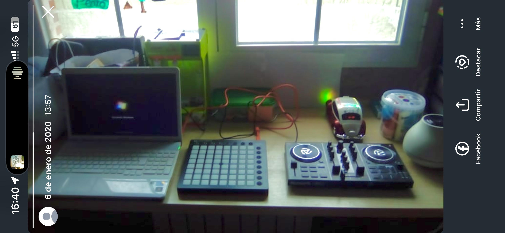
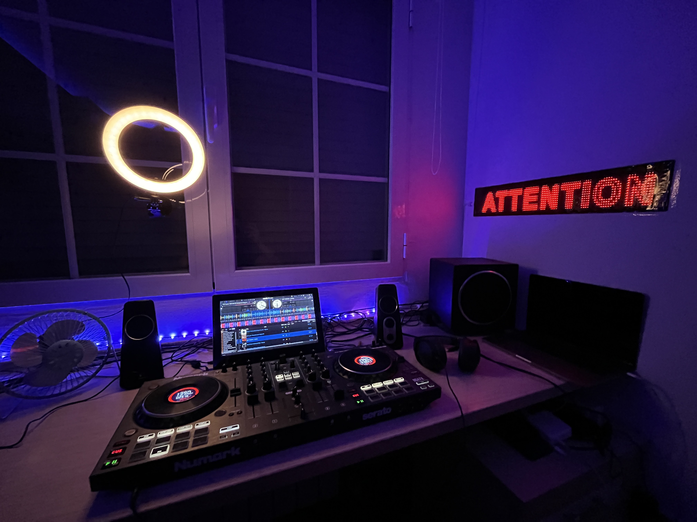
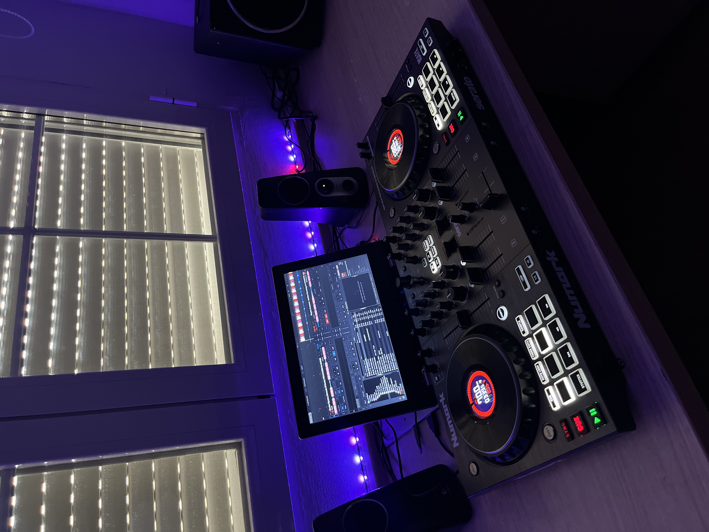
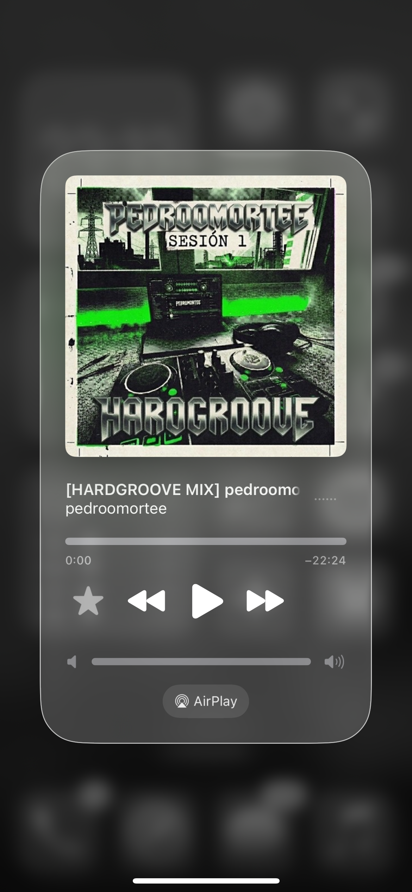

Proyecto 3
proyecto 3.
Explora mis proyectos y habilidades.
Hola, soy Pedro Morte, un desarrollador web apasionado por hacer cosas.
Para mí, la música nunca ha sido solo algo que pongo de fondo o un pasatiempo para cuando tengo tiempo libre. Es el motor de casi todo lo que hago cuando quiero crear: una idea puede empezar con un ritmo, convertirse en una frase y acabar siendo una canción que cuenta algo que tenía dentro. Hacer música me ha enseñado a tener paciencia, a probar sin miedo a equivocarme y a volver sobre una idea hasta que empieza a sonar como la imaginaba.
Este proyecto es el resultado de un camino que llevo construyendo desde hace años. Todavía estoy aprendiendo y sé que me queda muchísimo por mejorar, pero justo eso es lo que me engancha: cada sesión me deja algo nuevo, aunque solo sea descubrir una forma distinta de escribir una barra o de encajar una voz en la base.

Todo empezó cuando tenía 12 años y empecé a trastear con FL Studio Mobile desde el móvil. No sabía demasiado de producción, pero me podía pasar un buen rato probando sonidos, colocando ritmos y cambiando cosas hasta encontrar algo que me gustase. Al principio era pura curiosidad: quería ver qué podía crear con las herramientas que tenía a mano.
Mis primeros beats no eran perfectos, ni mucho menos, pero ahí aprendí algo que todavía me acompaña: una idea no tiene que salir terminada a la primera. A veces un ritmo que no funciona te lleva a otro mejor; otras, basta con cambiar un sonido o mover una pieza para que todo encaje. Sin darme cuenta, empecé a escuchar la música de otra manera, fijándome en cómo se construían las bases y en qué hacía que un tema tuviese su propio ambiente.

Con el tiempo, aquella curiosidad fue creciendo y empecé a dedicarle cada vez más atención. Pasé de simplemente probar aplicaciones a guardar ideas, trabajar en proyectos y pensar en cómo podría sonar algo antes incluso de empezar a montarlo.
Después de hacer bases, el siguiente paso fue empezar a escribir mis propios temas de rap. Si antes intentaba construir el ritmo, ahora también quería encontrar las palabras que pudieran vivir encima de él. Empecé a grabar en BandLab, probando cómo quedaban mis letras con una instrumental y aprendiendo poco a poco a soltar la voz delante del micro.
Grabarme me ayudó a escucharme desde fuera. Una frase que sobre el papel parecía buena podía sonar forzada al decirla; otras veces, una toma espontánea tenía más verdad que algo que había repasado mil veces. Con cada intento fui entendiendo mejor el ritmo, las pausas y la intención que quiero darle a lo que escribo.

El freestyle con mi primo y mis amigos ha sido otra parte clave del proceso. Para mí, esas sesiones son como un campo de entrenamiento: me obligan a escuchar, reaccionar y buscar una idea en el momento, sin tener tiempo para juzgar cada palabra antes de decirla.
También me han ayudado a perder la vergüenza. Improvisar delante de gente cercana hace que poco a poco te sueltes, aceptes que no todo va a salir redondo y aprendas a seguir aunque una rima no funcione. Además de ser un buen rato, es una forma de mantener la mente ágil y encontrar giros o combinaciones que luego puedo desarrollar escribiendo.
He tenido la suerte de contar con dos amigos muy cercanos que también hacen música a un nivel semiprofesional. Tenerlos cerca me ha servido como una escuela y una referencia: puedo ver cómo se toman en serio su trabajo, cómo desarrollan sus ideas y cómo resuelven problemas que yo también me encuentro cuando escribo o grabo.
Compartir ese entorno me anima a mejorar, pero no quiero limitarme a repetir lo que hacen los demás. Estoy intentando encontrar mi propia forma de escribir y de sonar. Para eso me fijo mucho en el ingenio y la crudeza del hip-hop underground. Las letras de Natos y Waor, Jaloner, Sharif y Ardo440 son referencias que me ayudan a pensar en cómo construir mejores barras, cuidar las imágenes y expresar algo con personalidad.
No se trata de copiar un estilo, sino de aprender de lo que me llega: cómo una frase puede ser directa y, a la vez, dejarte pensando; cómo se puede contar algo personal sin maquillarlo demasiado; o cómo una palabra bien colocada puede cambiar el peso de toda una línea. Después intento llevar esas ideas a mi propio terreno.

Ahora mismo, gran parte de mi proyecto ocurre lejos de publicar canciones. A día de hoy todavía no he sacado ni un solo tema de manera oficial, pero eso no significa que no esté trabajando. En mi archivo tengo más de 500 letras escritas: ideas completas, versos sueltos, borradores y frases que quizá algún día encuentre su sitio.
Escribo a diario. No todos los días sale una letra que quiera guardar para siempre, pero sentarme a escribir me ayuda a coger ritmo y a no depender únicamente de la inspiración. También vuelvo a mis textos, corrijo, cambio palabras y guardo ideas para retomarlas más adelante. Muchas veces el trabajo importante es precisamente ese: insistir hasta que una letra se parece más a lo que quiero decir.
Además, me grabo en el estudio un mínimo de dos veces por semana. Cada sesión es una oportunidad para probar interpretaciones, revisar cómo suenan las tomas y aprender algo más sobre mi voz. A veces salgo con algo que me convence y otras con una lista de cosas que quiero mejorar; las dos situaciones forman parte del proceso.
Aunque todavía no haya publicado oficialmente, siento que estoy construyendo una base sólida: escribiendo, probando y aprendiendo con constancia. Para mí, este proyecto no va solo de llegar a tener canciones fuera, sino de disfrutar el camino y hacer música que de verdad sienta mía cuando llegue el momento de compartirla.
La música electrónica siempre ha sido una parte importante de mi vida, pero durante mucho tiempo pinchar fue algo que hacía en casa o rodeado de mis amigos. Este proyecto recoge cómo empezó esa afición, cómo fui encontrando mi sonido y el paso que por fin me atreví a dar: compartir una sesión en público.
El 6 de enero de 2020 tenía 10 años y ya sentía mucha curiosidad por el audio. Mis padres me regalaron mi primera controladora, una Numark Party Mix, y aquel regalo hizo que mezclar dejara de ser solo una idea: por fin podía probarlo con mis propias manos.
Por entonces también trasteaba con un Launchpad de Novation y con Ableton Live Lite. Me entretenía produciendo, combinando sonidos y mezclando, sin saber todavía muy bien adónde me llevaría todo eso. Fueron mis primeros pasos y, casi sin darme cuenta, empecé a construir mis primeras bases rítmicas.

Al cumplir 16 años decidí tomarme la mezcla más en serio. Poco a poco me fui decantando por la música electrónica y, en especial, por sonidos como el Hardgroove, el Schranz y el Tech House. Me atraen su energía y sus ritmos, pero también el reto de enlazar los temas y conseguir que una sesión tenga continuidad y personalidad.
Empecé a preparar y grabar mis sesiones con más intención. Bajo el alias PEDROOMORTEE subí a SoundCloud mis primeros sets, entre ellos «Sesión 1» y «Sesión 2». Publicarlos fue una forma de salir un poco de mi habitación: podía compartir lo que estaba haciendo y escuchar la sesión desde otra perspectiva.

El apoyo inicial de mi círculo de amigos significó mucho para mí. Sus mensajes y sus palabras de ánimo me dieron confianza para seguir grabando, mejorar y enseñar algo que hasta entonces había mantenido en un entorno cercano. Para alguien que empezaba, saber que mis amigos escuchaban mis sesiones hizo que todo se sintiera más real.
Aunque llevaba tiempo pinchando en fiestas privadas con mis amigos, por vergüenza no me había atrevido a hacerlo delante de un público más amplio. Me preocupaba equivocarme o no estar a la altura. Esa inseguridad hizo que durante mucho tiempo me quedara en lo conocido, aun teniendo ganas de probar.
El pasado fin de semana di por fin el paso: pinché en público en las prefiestas de mi pueblo, Mojados (Valladolid). Antes de empezar tenía nervios, pero una vez en la cabina me centré en la música y en disfrutar el momento. Todo salió mucho mejor de lo que esperaba.
Recibir tantos halagos después fue una inyección enorme de motivación. No solo me hizo ilusión que la gente disfrutara la sesión; también me confirmó que atreverme había merecido la pena. Sigo teniendo mucho que aprender, pero ya he roto una barrera que antes me parecía difícil de superar.

Ahora quiero aprovechar cualquier oportunidad que tenga para subirme a una cabina y seguir ganando experiencia. Mi primer bolo me ha demostrado que no tengo que esperar a sentirme completamente seguro para dar el siguiente paso: también puedo aprender mientras lo doy.
Además, he empezado a profesionalizar mi proyecto grabando mis sesiones en vídeo con mi nueva cámara, la Panasonic Lumix G7. Me ilusiona unir el mundo del audio con la imagen y cuidar no solo cómo suena cada sesión, sino también cómo la presento y la comparto.

Este es solo el comienzo. Quiero seguir explorando la electrónica, mejorar como DJ y convertir cada oportunidad en una experiencia que me acerque un poco más a lo que quiero hacer.
Puedes contactarme a través de mi correo electrónico: contactomorte@gmail.com o mediante el siguiente formulario:
Estoy ubicado en Mojados, Valladolid.